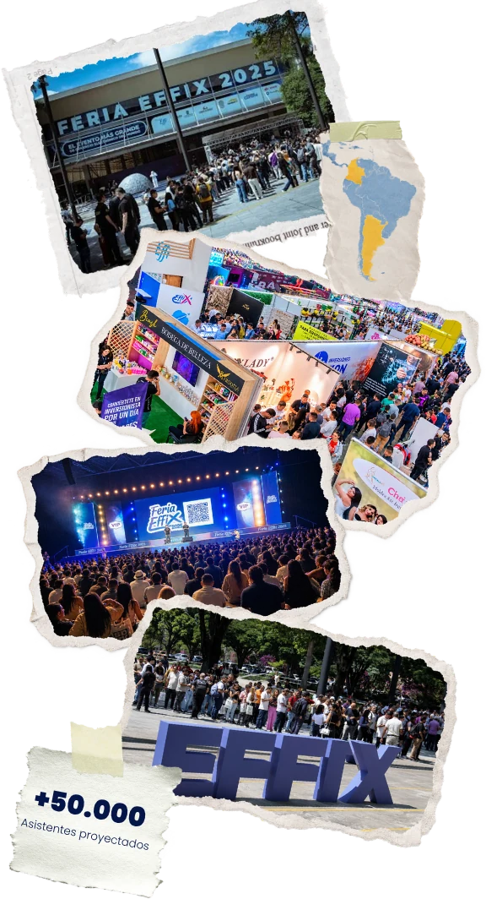
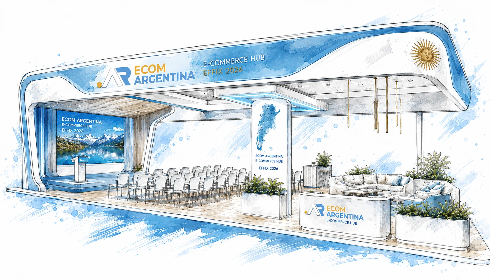
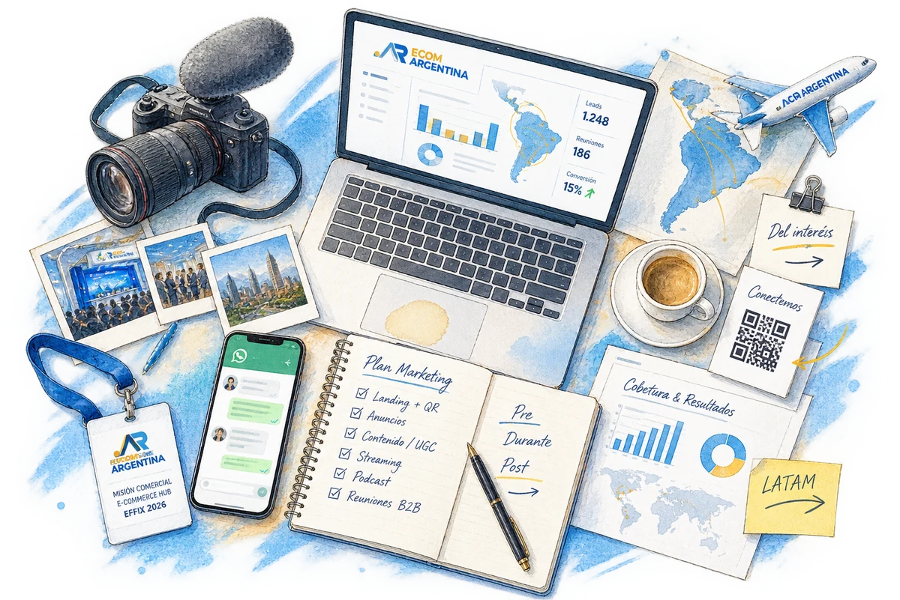
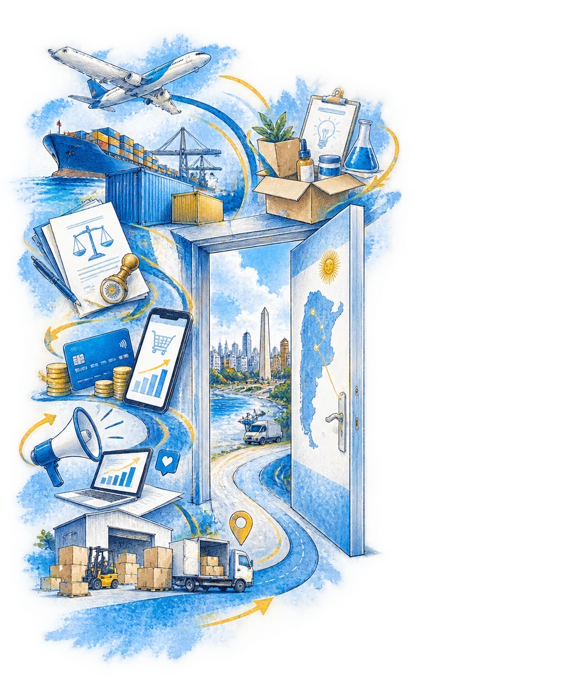
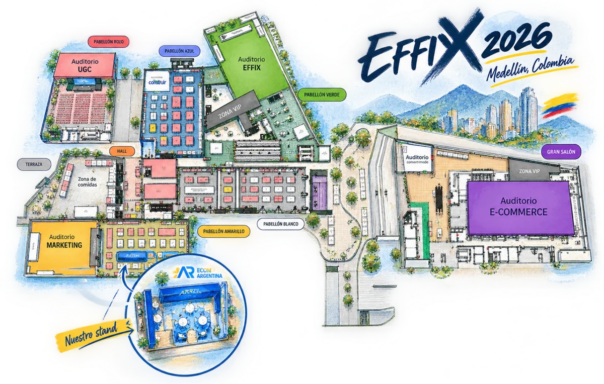

Un stand-auditorio "Abrí tu operación en Argentina" dentro de la feria de e-commerce más grande de Latinoamérica. Un micro-evento que enseña, captura y rentabiliza cada lead. Una propuesta de trabajo entre Fixy Latam y Merco Digital: lo que armamos juntos y las acciones de marketing que ejecutamos en el evento.
La oportunidad

La feria de e-commerce más grande de Latinoamérica: ~50.000 asistentes en la última edición, de Centroamérica, EE.UU., Chile, Uruguay, Paraguay y Colombia.
Participación consolidada, con aval verbal del dueño de la feria (Juan Carmona): espacio duplicado y activaciones pre-feria desde los canales de EFIX.
Empresas internacionales preguntan de forma recurrente cómo operar en Argentina: fulfillment, pagos, sociedades, importación.
Viernes a domingo, 8:00 a 20:00 h, con charlas cortas e inscripción previa para llenar cada bloque de agenda.
El concepto — lo que armamos

Un stand de 60 m² convertido en micro-auditorio, con charlas rotativas de 15 a 30 minutos durante los 3 días, sobre un tema único: cómo abrir y operar tu e-commerce en Argentina.
Ninguna marca sobresale sobre otra: la marca paraguas son los colores de Argentina.
La gente entra, aprende algo accionable y queda capturada en el funnel.
El resto de la feria intenta venderse; nosotros aportamos valor y generamos autoridad.
¿Dónde almaceno? ¿Cómo repatrío la plata? ¿Cómo constituyo la sociedad? ¿Qué restricciones hay para importar?
Quien se queda 15 minutos en una charla es un prospecto real, no un curioso.
Las acciones de marketing — lo que ejecutamos
La operación integral del funnel está a cargo de Merco Digital (experiencia: Expo eCommerce CAPACE Paraguay y eventos MiPYME con el gobierno de Paraguay).

Cómo se mide
Esquema de trabajo
La división clara entre lo que aporta Fixy Latam y lo que ejecuta Merco Digital.
Post-feria
La unidad de monetización: un programa de 6 módulos donde el prospecto se capacita y ejecuta en el momento, acompañado por el partner de cada vertical.
Resultado: la empresa extranjera queda operando en Argentina en ~6 meses. Modelo: precio cerrado por empresa, con revenue share entre los 6 partners. El stand genera los leads; el programa los rentabiliza.

Los sponsors
Criterio de admisión: trayectoria comprobable en Argentina. El círculo rojo de EFIX no se quema con proveedores débiles.
Fixy Latam
Merco Digital
A confirmar
A definir con criterio estricto
Sociedades para no residentes (a confirmar)
Fabricación local de winners (a confirmar)
Presupuesto
Financiado entre los 6 sponsors. Todo apoyo institucional que se consiga engorda la caja de activaciones sin tocar la base.

Activaciones: filmmakers, promotoras con cronograma impreso, creadores de contenido UGC, merchandising y material impreso.
Roadmap
“Si el stand es el más grande, la experiencia tiene que ser la más fuerte de la feria.”